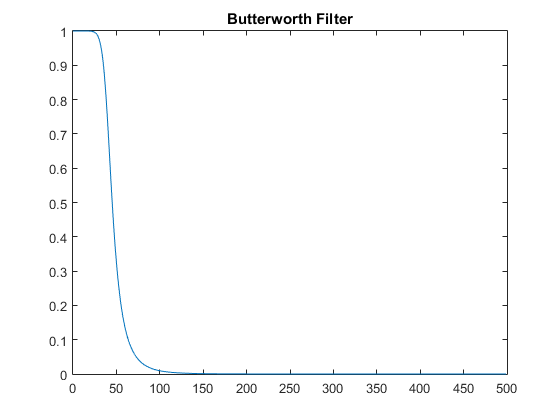
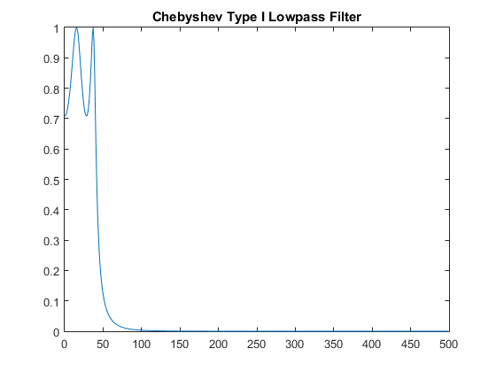
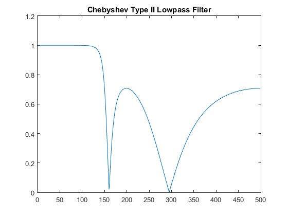

Infinite Impulse Response Filter Design
This code will prove to be classic example for proper use of the given functions for Butterworth filter, Chebyshev Type 1 filter and Chebyshev Type 2 Filter Design
Contents
- Inputs Provided
- Derivation of order by butterord
- Formula for Order n of Butterworth filter
- Applying the Butterworth filter function
- Converting to frequency domain.
- The PLOT for Butterworth Filter
- Derivation of order
- Applying the Chebyshev Type I filter function
- Converting to frequency domain.
- The PLOT for Chebyshev Type I Filter
- Derivation of order
- Applying the Chebyshev Type II filter function
- Converting to frequency domain.
- The PLOT for Chebyshev Type II Filter
- Author: Kaustubh Shivdikar
Inputs Provided
Passband Attenuation
Ap = 3;
Sampling Frequency
Fs = 500;
Stopband Attenuation
As = 60;
Passband Frequency
Wp = 40;
Dividing by Sampling Frequeny
Wp = Wp / Fs;
Stopband Frequency
Ws = 150;
Dividing by Sampling Frequeny
Ws = Ws / Fs;
Derivation of order by butterord
[n,Wn] = buttord(Wp,Ws,Ap,As);
Formula for Order n of Butterworth filter

OR another simplified version will be

Applying the Butterworth filter function
[b,a] = butter(n,Wn);
Converting to frequency domain.
[h,w] = freqz(b,a);
Since the obtained input was in Normalized Form we get it back by multiplying with Sampling Frequency
W = w*Fs/pi;
To remove the negative values of h we take absolute
h = abs(h);
The PLOT for Butterworth Filter
figure();
plot(W,h);
title('Butterworth Filter')
 Derivation of order
[n,Wp] = cheb1ord(Wp,Ws,Ap,As);
Applying the Chebyshev Type I filter function
[b,a] = cheby1(n,Ap,Wp);
Converting to frequency domain.
[h,w] = freqz(b,a);
Again since the obtained input was in Normalized Form we get it back by multiplying with Sampling Frequency
W = w*Fs/pi;
Again to remove the negative values of h we take absolute
h = abs(h);
The PLOT for Chebyshev Type I Filter
figure();
plot(W,h);
title('Chebyshev Type I Lowpass Filter')
 Derivation of order
[n,Wp] = cheb2ord(Wp,Ws,Ap,As);
Applying the Chebyshev Type II filter function
[b,a] = cheby2(n,Ap,Wp);
Converting to frequency domain.
[h,w] = freqz(b,a);
Again since the obtained input was in Normalized Form we get it back by multiplying with Sampling Frequency
W = w*Fs/pi;
Again to remove the negative values of h we take absolute
h = abs(h);
The PLOT for Chebyshev Type II Filter
figure();
plot(W,h);
title('Chebyshev Type II Lowpass Filter')
 Author: Kaustubh Shivdikar
MATLAB Lab experiment of Linear to circular convolution.